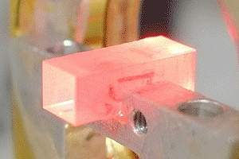
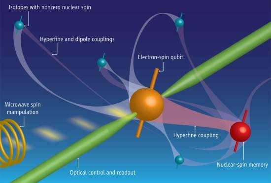
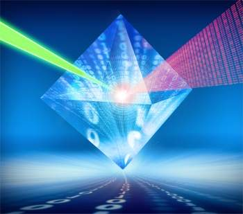

Memória quântica: o silício e o diamante(){
Notícias

Memória quântica sendo
produzida para testes.
Memória quântica sólida
Vamos mostrar nesta notícia um dos mais importantes componentes de um computador quântico: a memória quântica. Os primeiros experimentos com memórias quânticas - o registro de um qubit para que ele possa ser processado ou lido mais tarde - começaram com os complicados e sensíveis condensados de Bose-Einstein.
Na realidade, cientistas, engenheiros e pesquisadores sempre souberam que, para chegar a um computador quântico prático, seria antes necessário desenvolver memórias quânticas de estado sólido.
Após vários experimentos, chegou-se à conclusão que vários materiais sólidos seriam capazes de armazenar estados quânticos - um determinado valor armazenado em um qubit - por longos períodos.
Acontece que esses valores de qubits são essencialmente estados quânticos de fótons - e os materiais sólidos até então testados só conseguiam absorver de forma eficiente a luz de uma determinada polarização.
Não haveria, então, solução para o problema do armazenamento por longos períodos de tempo do estado dos qubits?
Memória quântica confiável
Sim, há uma solução, aliás, não apenas uma. Simultaneamente e de diferentes formas, o problema foi resolvido por nada menos do que três equipes diferentes: uma da China, outra da Espanha e uma terceira da Suíça.
Todas elas conseguiram armazenar e ler de volta dados de uma memória quântica de estado sólido, utilizando estados arbitrários de polarização da luz.
Os dados são gravados por fótons individuais, que são absorvidos por íons de terras raras confinados no interior de um cristal.
A diferença do trabalho das três equipes é que cada uma usou uma técnica de compensação diferente para manter o dado armazenado por longos períodos de tempo - onde "longo" significa algumas centenas de nanossegundos, como ocorre com o chamado "período de latência" das memórias clássicas dos computadores atuais.
Todas as técnicas alcançaram uma fidelidade ou confiança, enfim, uma medida da confiabilidade da recuperação do dado do qubit, superior a 95%, valor esse superior ao valor máximo que se pode obter com uma memória clássica.

O silício, bem conhecido dos computadores eletrônicos, agora entra
definitivamente no páreo como elemento básico dos computadores quânticos.
Qubits quase eternos
Agora, outras duas equipes conseguiram armazenar os qubits por longos períodos de tempo, quase inimagináveis há alguns anos.
Os bits quânticos podem assumir vários valores ao mesmo tempo, mas eles perdem todos esses valores muito facilmente, devido a um fenômeno chamado decoerência, que destrói a propriedade quântica básica do qubit: o entrelaçamento.
Desta forma, uma das saídas é isolar o qubit o máximo possível do ambiente ao seu redor, mantendo-o livre da decoerência enquanto for necessário armazená-lo.
Quando chega o momento em que o qubit precisa realizar alguma tarefa ele pode ser trazido para um local onde ele possa interagir com outros qubits, sendo levado de volta tão logo cumpra sua tarefa.
É aí que entram as duas inovações: duas equipes independentes conseguiram, por meio de diferentes formas, armazenar bits quânticos por períodos de tempo incrivelmente longos, e, mais importante, os dois esquemas funcionam em cristais sólidos, e não nas complicadas nuvens de gases superfrios.

Estruturas conhecidas como vacâncias de nitrogênio permitem que
nanocristais de diamante funcionem
como depósito de qubits.
Sua grande vantagem é que eles funcionam a temperatura ambiente.
Silício ou diamante
A primeira equipe conseguiu armazenar um dado quântico no interior de um cristal de silício-28 por até 3 minutos.
A segunda equipe seguiu outra abordagem: manteve a informação quântica no interior de um cristal de diamante, em uma estrutura conhecida como vacância de nitrogênio, por até 1,4 segundo.
Embora possa parecer que o primeiro experimento leva uma grande vantagem sobre o segundo, na verdade, em termos práticos, é o contrário que se dá.
Tal fato acontece porque o qubit foi armazenado no "defeito" de nitrogênio a temperatura ambiente, enquanto que o cristal de silício faz o mesmo trabalho a uma temperatura de cerca de 2 Kelvin.
Ambos os experimentos tiram proveito do spin do núcleo dos átomos, que é mais resistente às influências externas, que levam à decoerência, do que os spins dos elétrons.
As duas equipes desenvolveram técnicas ópticas para acoplar o spin nuclear para um qubit baseado em um elétron, que pode ser transferido para operar externamente e trazido de volta para ser armazenado em segurança no spin nuclear.
É claro e visível que ainda há um longo caminho a ser percorrido até que essas tecnologias possam ser implantadas e oferecidas com plena confiabilidade à um usuário doméstico em um computador doméstico. Porém, uma coisa é certa: a computação quântica é uma tecnologia que se aproxima, cada vez mais, de se tornar realidade para nós: usuários e desenvolvedores.
Referências:
Inovação Tecnológica
Wikipédia
}